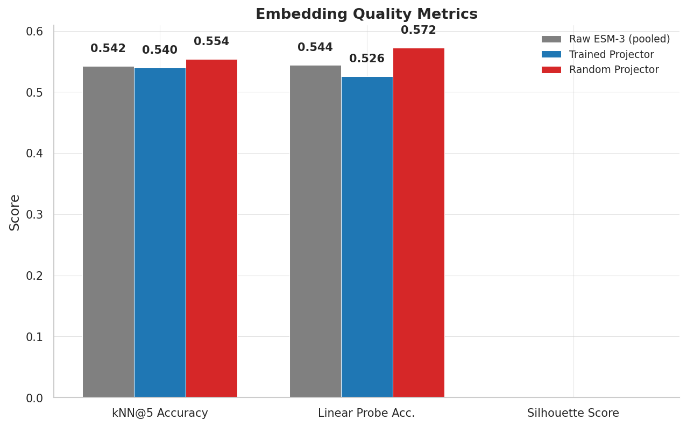
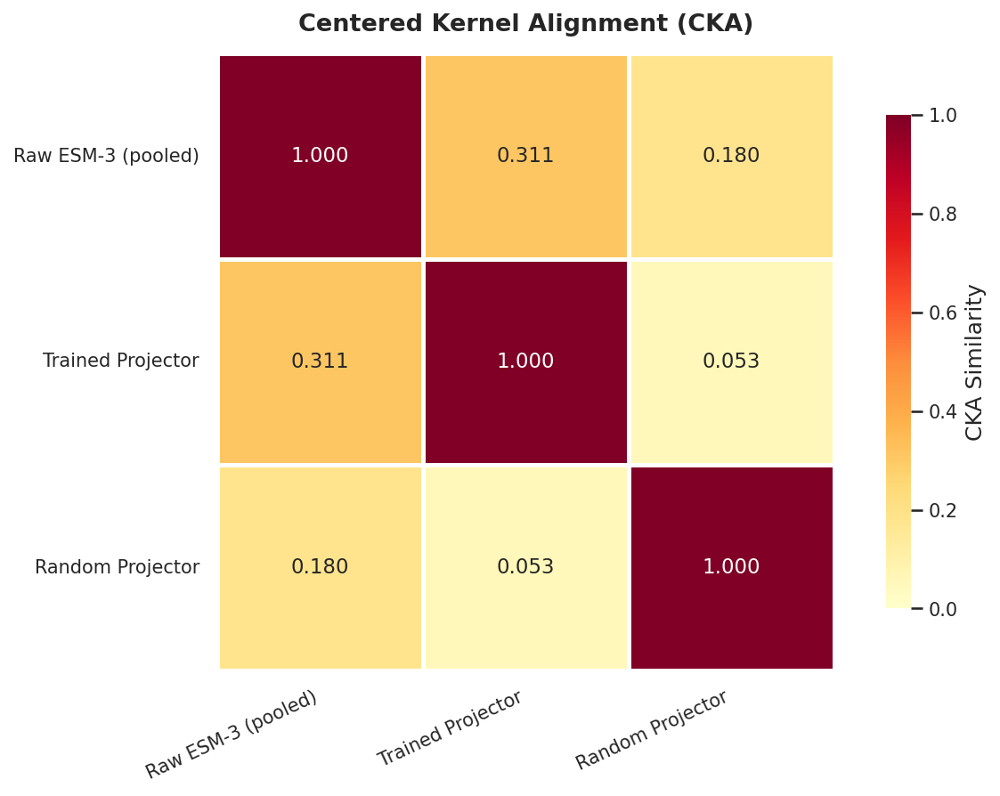
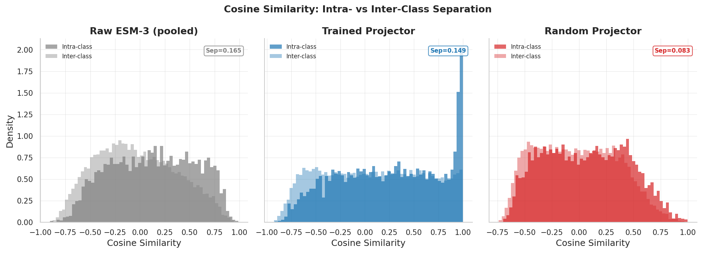
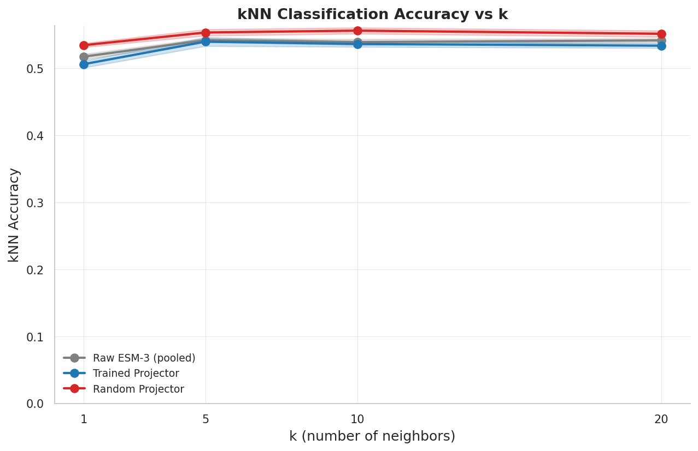
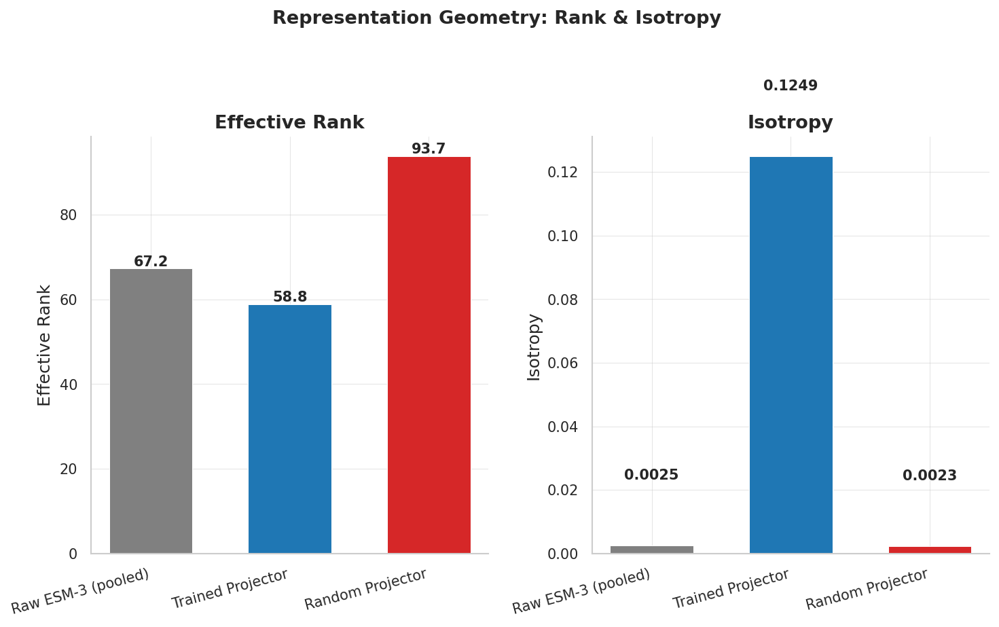

We ran a comprehensive embedding quality analysis comparing three conditions — raw ESM-3 (attention-pooled), trained MLP projector, and random MLP projector — on 27,818 proteins from downstream biological tasks. All three conditions scored within ~2% of each other on kNN and linear probe accuracy (~54%), with the random projector slightly ahead. Literature from the vision-LLM community confirms this is a general property of generative multimodal systems, not a bug in our training.
Instead of using the 18 question-type labels from Mol-Instructions (which proved uninformative), we extracted proteins from three downstream datasets with real biological annotations:
| Dataset | Samples | Labels | Source |
|---|---|---|---|
| GO Prediction | 8,818 | go | CAFA5 |
| Stability | 10,000 | neutral, stabilizing, destabilizing | MegaScale (ddG) |
| Structure Quality | 10,000 | high, medium, low | pLDDT / fold category |
7 biological classes total, reflecting real protein properties rather than question formats.
ESM-3 (frozen, 1536-dim) → AttentionPooling (32 tokens) → Condition-specific:
Raw: 32 × 1536 = 49,152-dim flattened → PCA(128)
Trained: 32 × 2560 = 81,920-dim flattened → PCA(128)
Random: 32 × 2560 = 81,920-dim flattened → PCA(128)We use flatten + PCA instead of mean-pooling to preserve token-level information that pooling discards. PCA to 128 dims retains 97–99% variance for ESM3/trained, 86% for random.
| Metric | ESM3 Raw | Trained | Random |
|---|---|---|---|
| kNN@5 Accuracy | 0.542 | 0.540 | 0.554 |
| Linear Probe Acc. | 0.544 | 0.526 | 0.572 |
| Silhouette Score | -0.094 | -0.168 | -0.067 |
| Precision@5 | 0.456 | 0.439 | 0.473 |
| MRR | 0.665 | 0.648 | 0.686 |
| Cosine Separation | 0.165 | 0.149 | 0.083 |
| Effective Rank | 67.2 | 58.8 | 93.7 |
| Isotropy | 0.003 | 0.125 | 0.002 |
| ESM3 Raw | Trained | Random | |
|---|---|---|---|
| ESM3 Raw | 1.000 | 0.311 | 0.180 |
| Trained | 0.311 | 1.000 | 0.053 |
| Random | 0.180 | 0.053 | 1.000 |
The trained projector learns a substantially different transformation from the random one (CKA=0.053), but this different transformation does not translate to better embedding-level classification.





Verma et al. (ACL 2024) directly tested whether the projector in multimodal LLMs extracts visual attributes. It does not. The projector merely learns to "route" information to leverage pre-existing LLM knowledge. Domain-specific understanding is modeled by the LLM parameters, not the projector.
[1] Verma et al., "Cross-Modal Projection in Multimodal LLMs Doesn't Really Project Visual Attributes to Textual Space," ACL 2024 Short Papers.
VIRAL (KAIST, 2025) showed that text-only supervision causes representations to drift away from encoder features — the model retains only features that aid text prediction, discarding other cues. They propose explicit intermediate supervision to counteract this degradation.
Tong et al. (CVPR 2024) documented that generative training does not fix, and may exacerbate, CLIP's embedding-level discriminability issues ("CLIP-blind pairs").
[2] "VIRAL: Visual Representation Alignment for MLLMs," KAIST CVLAB, 2025.
[3] Tong et al., "Eyes Wide Shut? Exploring Visual Shortcomings of Multimodal LLMs," CVPR 2024.
Recent work (2026) shows visual tokens partition into sink, dead, and alive groups — only ~60% carry image-specific meaning. Since the projector performs a linear transformation, it inherits this redundancy from the encoder.
[4] "What Do Visual Tokens Really Encode? Uncovering Sparsity and Redundancy in MLLMs," 2026.
LLaVA's single linear projection layer (trained on only 600K pairs) achieved strong results. Extreme token reduction (75–89%) shows comparable performance. Since our projector maps 1536→2560 (dimensionality increases), random projections are even more likely to preserve pairwise distances via the Johnson-Lindenstrauss effect.
[5] Liu et al., "LLaVA-1.5: Improved Baselines with Visual Instruction Tuning," CVPR 2024.
Fang et al. (2025) show the optimal alignment level depends on data characteristics — over-alignment can hurt unimodal performance. This provides theoretical grounding for why a trained projector might worsen embedding-level metrics.
[6] Fang et al., "To Align or Not to Align: Strategic Multimodal Representation Alignment," 2025.
No published work analyzes post-projection embedding quality in protein-LLMs. The closest work:
[7] "Aligning Large Language Models and Geometric Deep Models for Protein Representation," Patterns, 2025.
[8] Xu et al., "ProtST: Multi-Modality Learning of Protein Sequences and Biomedical Texts," 2023.
The next-token prediction objective optimizes P(next_token | context), which is a lossy compression of the full embedding space. The LLM only needs the projected embeddings to carry information useful for generating text — geometric properties like cluster separation, isotropy, or kNN discriminability are irrelevant to this objective. The LLM compensates for projector limitations through its own parameters (LoRA fine-tuning).
1. Embedding-level metrics are NOT the right evaluation for generative protein-LLMs. The projector is doing its job — reformatting ESM-3 features for the LLM decoder.
2. Generation quality (BLEU, task accuracy, expert evaluation) is the appropriate metric for comparing approaches.
3. This analysis is novel — no protein-LLM paper has measured this. It confirms that findings from the vision-LLM community extend to the protein domain.
The trained projector's spike at cosine similarity ~1.0 (Fig. S3) is noteworthy. This partial collapse suggests the projector maps many proteins to similar regions — likely because the SFT training signal rewards generating correct text regardless of how distinct the embeddings are. This is consistent with the "alignment tax" described by VIRAL.
The random projector slightly outperforms because: (1) it applies a structure-preserving random transformation (JL effect), (2) the higher output dimensionality (81,920 flattened) gives PCA more room to find separable directions, and (3) it doesn't suffer from the partial collapse induced by generative training.
The embedding analysis measures geometric structure (cluster separation, kNN discriminability). But the LLM is a powerful nonlinear decoder — it can extract subtle signals from embeddings that don't form clean clusters. The relevant question is not "do embeddings cluster well?" but "does the LLM generate better answers with embeddings than without?"
The SFT stage provides strong evidence that protein information flows through the projector:
| Approach | SFT Eval Loss | Gap |
|---|---|---|
| ESM-3 + MLP | 0.361 | — |
| Text-only | 1.266 | 3.5× worse |
The MLP approach achieves 3.5× better eval loss than text-only, proving the projected embeddings carry substantial protein information that the LLM successfully decodes. This gap persists despite the projector's poor embedding-level metrics.
Our initial GRPO experiments reveal a nuanced picture:
| Metric | ESM-3 + MLP |
|---|---|
| Mean Reward | 0.676–0.695 |
| Format Compliance | 85% → 94% |
| Factual Accuracy | 3/5 (unchanged) |
| Zero-std Batches | 37–42% (problematic) |
GRPO improved format compliance but factual accuracy remained flat. However, this task (binary MC) is unsuitable for RL — the reward is too sparse and the SFT model already captured the knowledge.
| Metric | ESM-3 + MLP |
|---|---|
| Mean Reward | 0.780 |
| Reward Std | 0.154 (good variance) |
| Quality Alignment | 0.354 |
| LoRA Grad Norm | 4.93e-10 (near zero) |
| Multimodal Grad Norm | 1.0 (clipped) |
Critical issue: The structure quality task shows a promising reward landscape (good variance, continuous reward) but LoRA gradients are near zero — the LLM is not actually updating while the projector receives gradients. This is a training bug, not a fundamental limitation of the embeddings.
| Factor | Helps RL | Hurts RL |
|---|---|---|
| Embeddings carry protein info | SFT eval loss 0.36 vs 1.27 proves info flows through | — |
| Cosine collapse (Fig. S3) | — | Some proteins become indistinguishable → LLM gives same answer |
| RL reward signal | Could reshape projector to encode task-relevant features | If collapse is severe, gradient signal may be too noisy |
| Low CKA (trained↔random = 0.053) | Trained projector learned something genuinely different | What it learned doesn't help linear classification |
The definitive test is whether text-only GRPO vs MLP GRPO shows a gap on downstream tasks with continuous rewards (stability, structure quality). If the 3.5× SFT advantage carries through to RL, then the embeddings are valuable despite poor clustering. If the gap closes under RL, it would suggest the LLM learns to extract protein information from raw text when given reward signal.
A text-only GRPO run on structure quality is currently in progress. The comparison will be the most informative test of whether ESM-3 embeddings add value in the RL setting.